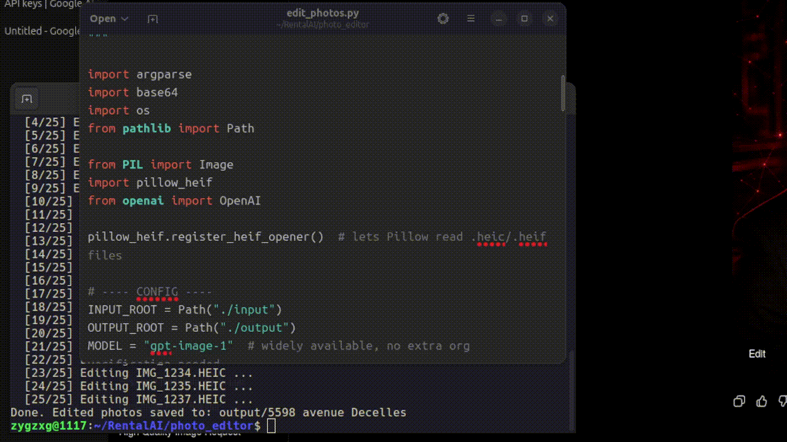
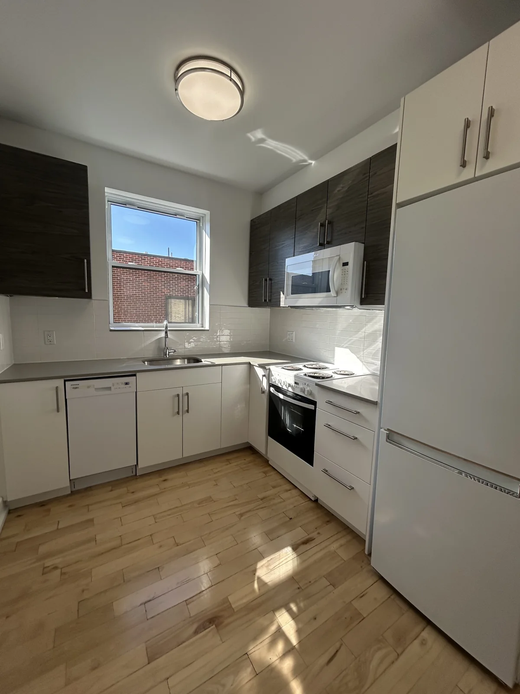
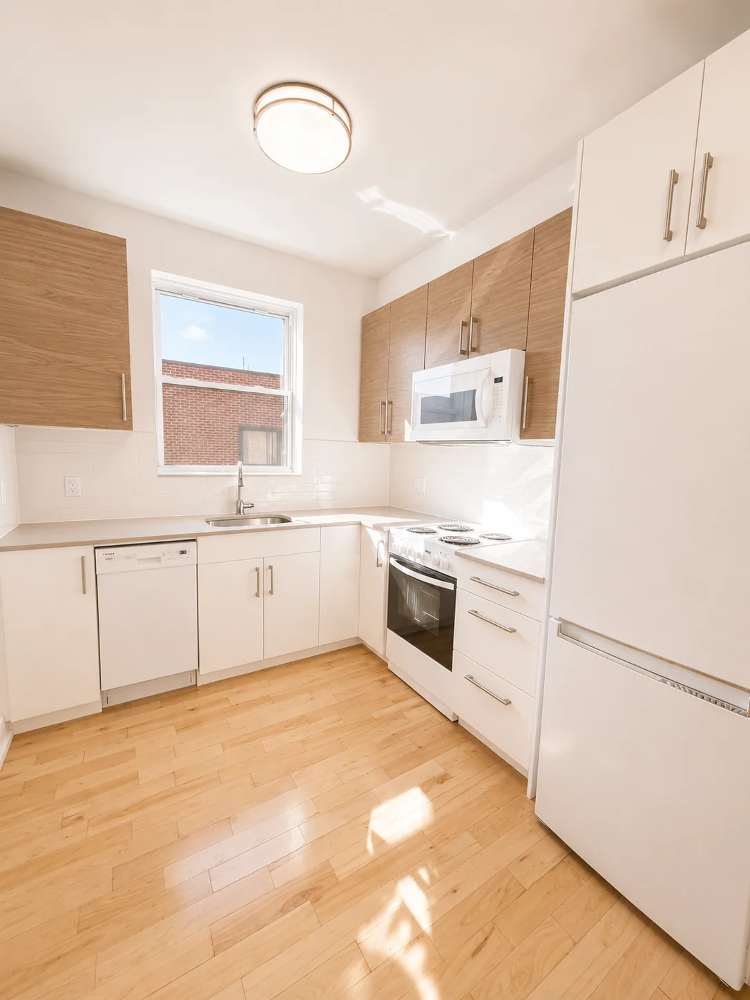

Built around the problem.
Every project below is either live in production for a real business, or a working prototype built to test a real idea.
Doc Chaser
Designed and deployed for a residential leasing agency in Montreal.
A tablet/phone-first web app that captures a client's info, ID, and signature on the spot (a QR-code handoff covers the desktop case, since a PC has no camera), auto-detects which legal form the building requires, fills it, creates a named Google Drive folder, and emails the client anything that couldn't be collected in person.
What used to be a multi-day email chase becomes a same-visit close. The client finishes cleanly while the decision still feels good, instead of sitting with an unfinished application and enough time to change their mind.

Problem, approach & technical stack
The slowest part of closing a lease is all the paperwork. An agent emails a document checklist and waits days for scattered replies, while the client has time to keep browsing other units and talk themselves out of the one they just saw.
Every building requires one of three different legal rental-application forms, and every applicant or guarantor on a lease needs their own filled copy. Selecting the right form, filling it correctly, and organizing the resulting files was manual work an agent repeated after every single visit.
Python, Flask, Google Drive/Docs/Gmail APIs, automated PDF form-filling, deployed and running in production on its own VPS and domain.
RecruiterAI
A tool that takes a job description and a stack of resumes and produces a grounded, quarter-by-quarter projection of how each candidate's first year might unfold, plus sharp interview questions, deliberately with no score and no ranking, just material to reason with.
Turns hiring from a leaderboard exercise into an actual profiling process, judgment support a manager can explain and defend later on.

Problem, approach & technical stack
A hiring manager is judged on whether the person they picked actually works out. A resume alone doesn't show that.
Existing screening tools either rank candidates behind an opaque score, or leave the manager to imagine unaided how someone will actually perform. Neither gives a defensible basis for the decision.
Python, Flask, OpenAI API, PDF resume parsing.
Listing Photo Pipeline
A script that runs each raw photo through an AI image model with a fixed editing instruction and returns a polished, listing-ready image automatically.
Editing time per photo drops from minutes to seconds, at roughly six cents a photo, the first AI system put into live, daily use at work.




Problem, approach & technical stack
Every rental listing needs photos that look professional, but editing raw phone photos by hand is slow, and it repeats for every unit, every listing, every week.
Manual editing in an external app cost real minutes per photo, time that scales directly with how many units are on the market at once.
Python, OpenAI's image API.
AskSQL
A tool that takes a plain-English question, writes the real SQL, runs it against the actual leasing database, and answers in plain English, always showing the underlying query so the answer stays checkable.
Anyone on the team gets a straight, verifiable answer from real data in seconds, without learning SQL or waiting on whoever normally runs the reports.
Example query
Which buildings have a 1 bedroom under $1,600?
SELECT name, price_1bed FROM buildings WHERE price_1bed < 1600;
The answer stays checkable. The underlying SQL is shown alongside it.
Problem, approach & technical stack
Answering a simple business question, "which units rent under $1,600," "how many deals has this agent closed", means opening a spreadsheet or a CRM and digging.
Structured business data is only useful to whoever already knows how to query it. Everyone else waits on that person, or guesses.
Python, OpenAI's API (or a fully local Ollama model), SQLite.